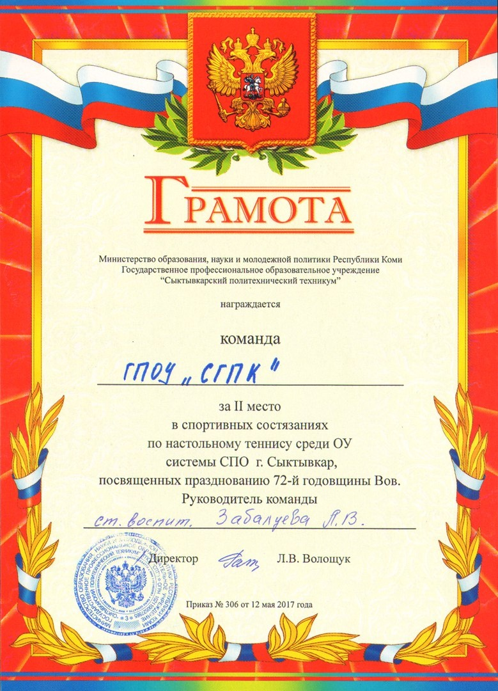

Настольный теннис или пинг-понг по праву называют увлечением миллионов людей любого возраста, которые с азартом в него играют.
В настольный теннис играть легко и комфортно. Что интересно, этот вид спорта влюбляет в себя не только старшее поколение, но и молодёжь.
15 мая 2017 года состоялись спортивные состязания по настольному теннису среди образовательных организаций системы среднего профессионального образования города Сыктывкара, посвящённые празднованию 72-ой годовщине Великой Отечественной войны
В соревнованиях приняли участие команды общежитий ГПОУ «Сыктывкарский гуманитарно-педагогический колледж им. И.А. Куратова», ГПОУ «Сыктывкарский колледж сервиса и связи», ГПОУ «Сыктывкарский политехнический техникум». Всего в турнире участвовало 18 юношей.
Команду ГПОУ «Сыктывкарский гуманитарно-педагогический колледж им. И.А. Куратова» представили следующие студенты: Морохин Николай 432 группа, Латкин Максим 431 группа, Филиппенков Егор 432 группа, Ерусалимов Виталий 422 группа, Комышев Виталий 411 группа, Юркин Даниил 411 группа, Мальцев Симеон 411 группа.
Результаты соревнований следующие:
1 место - ГПОУ «Сыктывкарский колледж сервиса и связи».
2 место - ГПОУ «Сыктывкарский гуманитарно-педагогический колледж им. И.А. Куратова».
3 место - ГПОУ «Сыктывкарский политехнический техникум».
Поздравляем ребят со 2 местом и благодарим за организацию мероприятия среди ОУ системы СПО города Сыктывкара воспитателей общежитий, главного судью Александра Владимировича Короткова.
Ст. воспитатель Забалуева Л.В., воспитатель Онищук А.И.